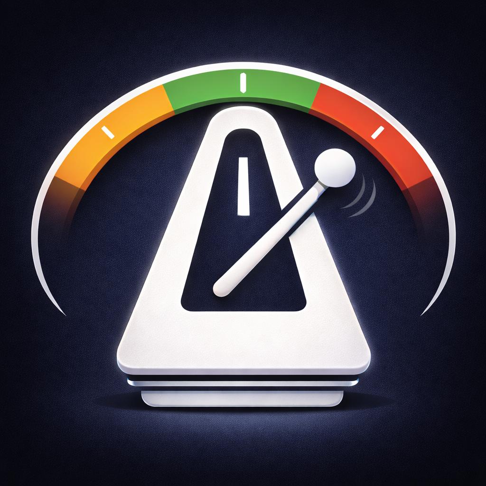

MetroTune Support & Feedback
Practice Smarter. Play Better.
Need Help?
For bug reports, feature requests, or any questions about MetroTune, email us at
support+metrotune@archetstudio.comWe typically respond within 48 hours.
Frequently Asked Questions
How does Clap Control work?
Clap twice quickly to start or stop the metronome hands-free. Two sharp claps within 0.6 seconds will toggle playback — perfect when your hands are on an instrument.
MetroTune uses advanced signal processing to distinguish real claps from other sounds like metronome clicks or instrument attacks. It analyzes the frequency signature and zero-crossing rate of each sound, and automatically adapts to your background noise level.
Premium users can fine-tune the detection threshold and background ratio, and adjust the double-clap timing window (0.5–1.0 seconds) to match their preference.
What are Tempo Maps?
Tempo Maps let you create a sequence of tempo, time signature, beat pattern, and sound changes that play automatically. Each entry specifies the BPM, beat count, pattern, sound, and number of measures to play before moving to the next step.
You can save and load named profiles, set loop modes (play once, repeat 1–99 times, or loop infinitely), and add lead-in count beats. Long-press any entry to start playback from that point.
This is ideal for practicing pieces with tempo changes, building progressive exercises, or running structured warm-up routines.
What is Gap Click?
Gap Click trains your internal clock by alternating between audible clicks and silence. Play in time during the silent gap, then check yourself when the click returns.
Choose from built-in modes: Beginner (3 measures click, 1 silent), Pro (1 measure click, 3 silent), or Random (randomized split each cycle). Premium users also get Manual mode with fully customizable sound and silent measures, plus a Guide Beat that plays the downbeat of each silent measure as a reference anchor.
How does the Pitch Checker (Check) feature work?
Pitch Checker plays a confirmation sound when you hold a note in tune for a set duration. It monitors your pitch in real time and triggers when you sustain a note within the tolerance range (adjustable from ±5 to ±20 cents) for the required hold time (0.25–3.0 seconds).
You can choose a click, beep, or reference tone as your confirmation sound. A progress ring shows your tracking status, and the note letter flashes on confirmation.
What tuner features are available?
MetroTune includes a full chromatic tuner with real-time pitch detection. It displays the detected note name and octave, a tuning gauge showing cents off-target, and the frequency in Hz. The reference pitch is customizable (default A4 = 440 Hz).
Adjustable sensitivity modes let you optimize for your instrument: Stable for voice and wind instruments, Medium for balanced use, or Fast for string instruments.
The tuner also offers multiple reference tone profiles including Tone, Clarinet, Organ, Bell, and Brass, each with distinct harmonic characteristics. Long-press any note to play a sustained Guide Tone as a reference pitch.
Can I use the metronome silently?
Yes. Vibrate Mode pulses your phone on each beat instead of playing audio — a stronger pulse marks beat 1. This is great for rehearsals, live performance, or anywhere you need a silent click track. Muted Mode turns off all sound and haptics, displaying an enlarged visual beat indicator instead.
How do I set tempo by tapping?
Tap the TAP button next to the BPM display repeatedly at your desired tempo. MetroTune detects the average interval and shows the BPM in real time. Press Done to apply the detected tempo.